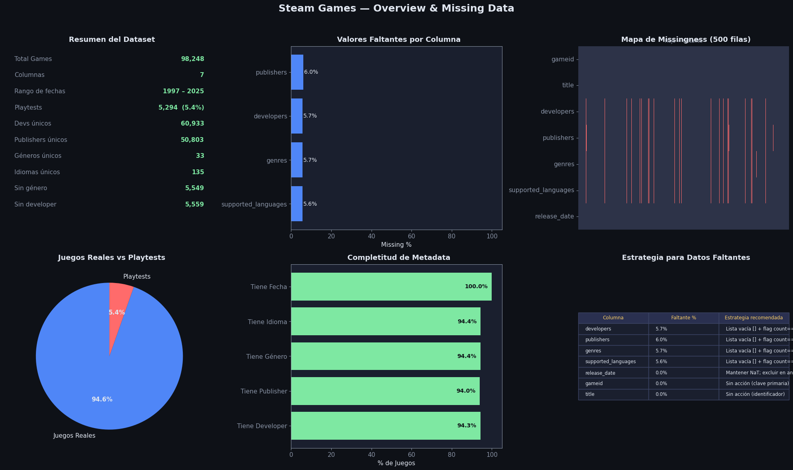
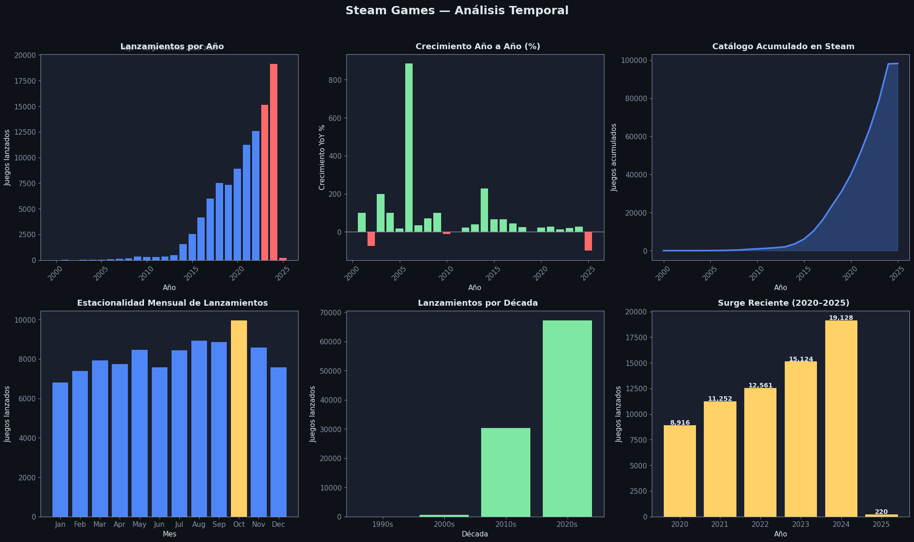
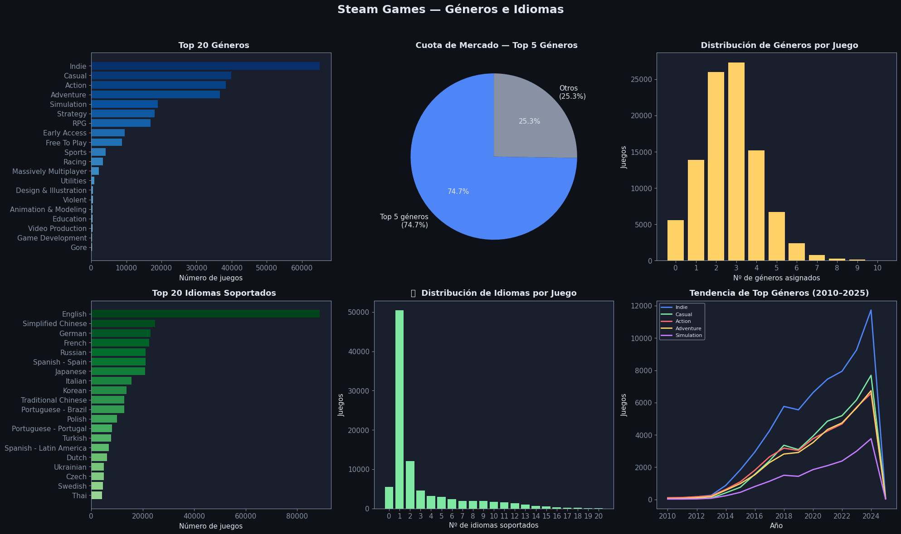
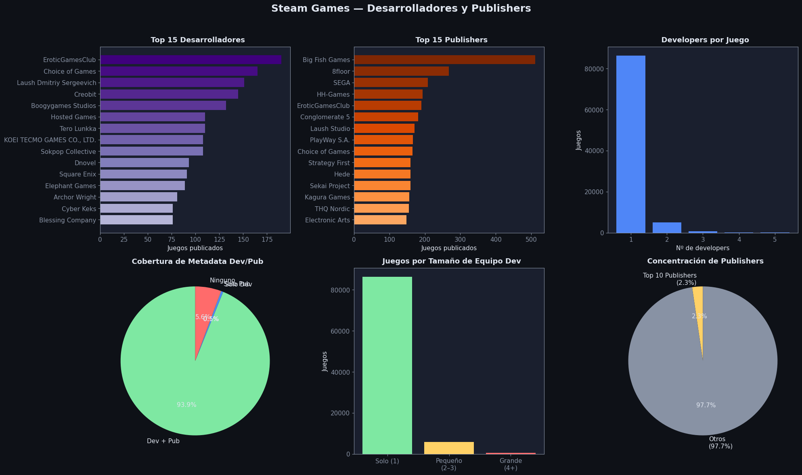
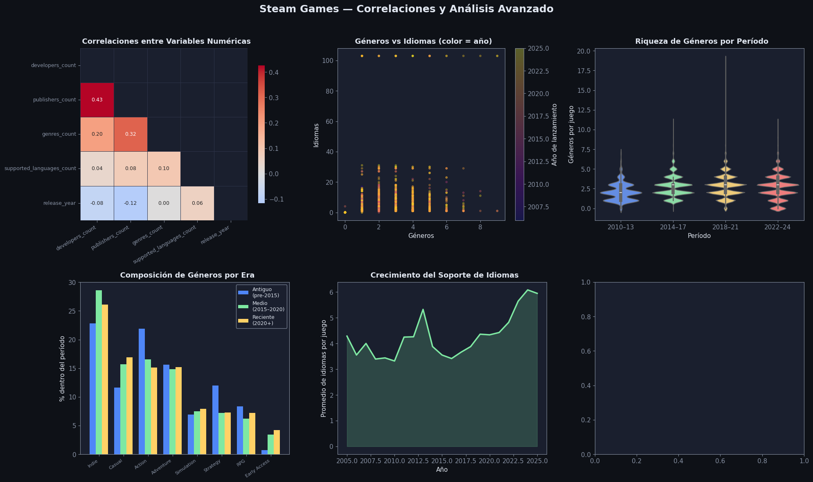

Steam Dataset EDA: games#
Descripción: Lista de juegos con información general: título, desarrolladores, publishers, géneros, idiomas y fecha de lanzamiento.
Columna |
Tipo |
Descripción |
|---|---|---|
|
int |
ID único del juego en Steam |
|
str |
Nombre completo del juego |
|
list (str) |
Lista de desarrolladores |
|
list (str) |
Lista de publishers |
|
list (str) |
Géneros asignados |
|
list (str) |
Idiomas disponibles |
|
date |
Fecha de lanzamiento |
Imports y configuración de estilo#
import pandas as pd
import numpy as np
import matplotlib.pyplot as plt
import seaborn as sns
import ast
import warnings
warnings.filterwarnings('ignore')
DARK_BG = '#0e1117'
CARD_BG = '#1a1f2e'
ACCENT1 = '#4f86f7'
ACCENT2 = '#7ee8a2'
ACCENT3 = '#ff6b6b'
ACCENT4 = '#ffd166'
TEXT = '#e0e6f0'
MUTED = '#8892a4'
plt.rcParams.update({
'figure.facecolor': DARK_BG, 'axes.facecolor': CARD_BG,
'axes.edgecolor': MUTED, 'axes.labelcolor': TEXT,
'xtick.color': MUTED, 'ytick.color': MUTED,
'text.color': TEXT, 'grid.color': '#2d3348',
'grid.alpha': 0.6, 'font.family': 'DejaVu Sans',
'font.size': 11,
})
def title_ax(ax, txt, sub=None):
ax.set_title(txt, fontsize=13, fontweight='bold', color=TEXT, pad=8)
if sub:
ax.text(0.5, 1.02, sub, transform=ax.transAxes, ha='center', fontsize=9, color=MUTED)
Carga y preprocesamiento#
Las columnas de listas (developers, publishers, genres, supported_languages) vienen como strings en el CSV.
Se parsean con ast.literal_eval y se crean columnas auxiliares *_list y *_count para facilitar el análisis.
También se extrae release_year y release_month de la fecha de lanzamiento.
df_raw = pd.read_csv('Datos/games.csv')
df = df_raw.copy()
n_rows, n_cols = df.shape
print(f"Shape: {n_rows:,} filas × {n_cols} columnas")
df_raw.head(3)
Shape: 98,248 filas × 7 columnas
| gameid | title | developers | publishers | genres | supported_languages | release_date | |
|---|---|---|---|---|---|---|---|
| 0 | 3281560 | Horror Game To Play With Friends! Playtest | NaN | NaN | NaN | NaN | 2024-10-21 |
| 1 | 3280930 | Eternals' Path Playtest | NaN | NaN | NaN | NaN | 2024-10-17 |
| 2 | 3280770 | ANGST: A TALE OF SURVIVAL - Singleplayer Playtest | NaN | NaN | NaN | NaN | 2024-10-13 |
def safe_parse_list(val):
"""Parsea strings con formato de lista Python. Retorna [] si está vacío o es NaN."""
if pd.isna(val) or str(val).strip() == '':
return []
try:
result = ast.literal_eval(val)
if isinstance(result, list):
return result
except:
pass
return [v.strip().strip("'\"") for v in str(val).split(',') if v.strip()]
LIST_COLS = ['developers', 'publishers', 'genres', 'supported_languages']
for col in LIST_COLS:
df[col + '_list'] = df[col].apply(safe_parse_list)
df[col + '_count'] = df[col + '_list'].apply(len)
df['release_date'] = pd.to_datetime(df['release_date'], errors='coerce')
df['release_year'] = df['release_date'].dt.year
df['release_month'] = df['release_date'].dt.month
df['is_playtest'] = df['title'].str.contains('Playtest', case=False, na=False)
print("Columnas disponibles:", df.columns.tolist())
Columnas disponibles: ['gameid', 'title', 'developers', 'publishers', 'genres', 'supported_languages', 'release_date', 'developers_list', 'developers_count', 'publishers_list', 'publishers_count', 'genres_list', 'genres_count', 'supported_languages_list', 'supported_languages_count', 'release_year', 'release_month', 'is_playtest']
Series precalculadas#
Se hace explode() en cada columna de listas para poder contar y rankear los valores individuales (géneros, idiomas, devs, publishers) de forma eficiente.
dev_series = df.explode('developers_list')['developers_list'].dropna()
dev_series = dev_series[dev_series != '']
pub_series = df.explode('publishers_list')['publishers_list'].dropna()
pub_series = pub_series[pub_series != '']
genre_series = df.explode('genres_list')['genres_list'].dropna()
genre_series = genre_series[genre_series != '']
lang_series = df.explode('supported_languages_list')['supported_languages_list'].dropna()
lang_series = lang_series[lang_series != '']
top_genres = genre_series.value_counts().head(20)
top_langs = lang_series.value_counts().head(20)
top_devs = dev_series.value_counts().head(15)
top_pubs = pub_series.value_counts().head(15)
year_counts = df['release_year'].value_counts().sort_index()
year_counts = year_counts[(year_counts.index >= 2000) & (year_counts.index <= 2025)]
games_per_dev = df[df['developers_count'] > 0]['developers_count']
genre_counts_per_game = df['genres_count']
month_release = df.dropna(subset=['release_month'])['release_month'].value_counts().sort_index()
MONTH_NAMES = ['Jan','Feb','Mar','Apr','May','Jun','Jul','Aug','Sep','Oct','Nov','Dec']
Análisis de valores faltantes#
Las columnas de listas (developers, publishers, genres, supported_languages) pueden estar vacías de dos formas:
NaNreal (campo ausente)String vacío
''(campo presente pero sin valor)
Ambos casos se tratan como faltantes. La estrategia adoptada es no eliminar filas, sino conservar las listas vacías [] y usar el flag *_count == 0 para identificarlas.
missing = df_raw.isnull() | (df_raw.apply(lambda col: col.astype(str).str.strip() == ''))
miss_pct = (missing.mean() * 100).round(2)
miss_cnt = missing.sum()
print("Porcentaje de valores faltantes por columna:")
pd.DataFrame({'count': miss_cnt, 'pct (%)': miss_pct}).sort_values('pct (%)', ascending=False)
Porcentaje de valores faltantes por columna:
| count | pct (%) | |
|---|---|---|
| publishers | 5941 | 6.05 |
| developers | 5559 | 5.66 |
| genres | 5549 | 5.65 |
| supported_languages | 5506 | 5.60 |
| gameid | 0 | 0.00 |
| title | 3 | 0.00 |
| release_date | 0 | 0.00 |
fig1, axes = plt.subplots(2, 3, figsize=(20, 12))
fig1.patch.set_facecolor(DARK_BG)
fig1.suptitle('Steam Games — Overview & Missing Data', fontsize=18, fontweight='bold', color=TEXT, y=0.98)
ax = axes[0, 0]
ax.set_facecolor(CARD_BG)
ax.axis('off')
summary_lines = [
('Total Games', f'{n_rows:,}'),
('Columnas', f'{n_cols}'),
('Rango de fechas', f'{df["release_year"].min():.0f} – {df["release_year"].max():.0f}'),
('Playtests', f'{df["is_playtest"].sum():,} ({df["is_playtest"].mean()*100:.1f}%)'),
('Devs únicos', f'{dev_series.nunique():,}'),
('Publishers únicos', f'{pub_series.nunique():,}'),
('Géneros únicos', f'{genre_series.nunique():,}'),
('Idiomas únicos', f'{lang_series.nunique():,}'),
('Sin género', f'{(df["genres_count"]==0).sum():,}'),
('Sin developer', f'{(df["developers_count"]==0).sum():,}'),
]
for i, (k, v) in enumerate(summary_lines):
y = 0.92 - i * 0.088
ax.text(0.05, y, k, transform=ax.transAxes, fontsize=11, color=MUTED)
ax.text(0.95, y, v, transform=ax.transAxes, fontsize=11, color=ACCENT2, ha='right', fontweight='bold')
title_ax(ax, ' Resumen del Dataset')
ax = axes[0, 1]
cols_miss = miss_pct[miss_pct > 0].sort_values(ascending=True)
bars = ax.barh(cols_miss.index, cols_miss.values,
color=[ACCENT3 if v > 50 else ACCENT4 if v > 20 else ACCENT1 for v in cols_miss.values])
for bar, val in zip(bars, cols_miss.values):
ax.text(val + 0.5, bar.get_y() + bar.get_height()/2, f'{val:.1f}%', va='center', fontsize=10, color=TEXT)
ax.set_xlim(0, 105)
ax.set_xlabel('Missing %')
title_ax(ax, ' Valores Faltantes por Columna')
ax = axes[0, 2]
sample = df_raw.sample(min(500, n_rows), random_state=42)
miss_matrix = sample.isnull() | (sample.apply(lambda col: col.astype(str).str.strip() == ''))
sns.heatmap(miss_matrix.T, ax=ax, cbar=False, cmap=['#2d3348', ACCENT3], yticklabels=True, xticklabels=False)
title_ax(ax, ' Mapa de Missingness (500 filas)', 'Rojo = faltante')
ax = axes[1, 0]
vc = df['is_playtest'].value_counts()
wedges, texts, autotexts = ax.pie(
[vc[False], vc[True]], labels=['Juegos Reales', 'Playtests'],
autopct='%1.1f%%', colors=[ACCENT1, ACCENT3], startangle=90, textprops={'color': TEXT}
)
for at in autotexts:
at.set_fontsize(11); at.set_fontweight('bold')
title_ax(ax, ' Juegos Reales vs Playtests')
ax = axes[1, 1]
cats = ['Tiene Developer', 'Tiene Publisher', 'Tiene Género', 'Tiene Idioma', 'Tiene Fecha']
pcts = [
(df['developers_count'] > 0).mean() * 100,
(df['publishers_count'] > 0).mean() * 100,
(df['genres_count'] > 0).mean() * 100,
(df['supported_languages_count'] > 0).mean() * 100,
df['release_date'].notna().mean() * 100,
]
bar_colors = [ACCENT2 if p >= 80 else ACCENT4 if p >= 50 else ACCENT3 for p in pcts]
bars = ax.barh(cats, pcts, color=bar_colors)
for bar, val in zip(bars, pcts):
ax.text(val - 2, bar.get_y() + bar.get_height()/2,
f'{val:.1f}%', va='center', ha='right', fontsize=10, color=DARK_BG, fontweight='bold')
ax.set_xlim(0, 105); ax.set_xlabel('% de Juegos')
title_ax(ax, ' Completitud de Metadata')
ax = axes[1, 2]
ax.axis('off')
strategy_data = [
['developers', f'{miss_pct["developers"]:.1f}%', 'Lista vacía [] + flag count==0'],
['publishers', f'{miss_pct["publishers"]:.1f}%', 'Lista vacía [] + flag count==0'],
['genres', f'{miss_pct["genres"]:.1f}%', 'Lista vacía [] + flag count==0'],
['supported_languages', f'{miss_pct["supported_languages"]:.1f}%', 'Lista vacía [] + flag count==0'],
['release_date', f'{miss_pct["release_date"]:.1f}%', 'Mantener NaT; excluir en análisis temporal'],
['gameid', f'{miss_pct["gameid"]:.1f}%', 'Sin acción (clave primaria)'],
['title', f'{miss_pct["title"]:.1f}%', 'Sin acción (identificador)'],
]
col_labels = ['Columna', 'Faltante %', 'Estrategia recomendada']
tbl = ax.table(cellText=strategy_data, colLabels=col_labels, loc='center', cellLoc='left')
tbl.auto_set_font_size(False); tbl.set_fontsize(8.5)
for (r, c), cell in tbl.get_celld().items():
cell.set_facecolor(CARD_BG if r > 0 else '#2a3050')
cell.set_edgecolor('#3d4566')
cell.set_text_props(color=TEXT if r > 0 else ACCENT4)
tbl.scale(1, 1.5)
title_ax(ax, ' Estrategia para Datos Faltantes')
plt.tight_layout(rect=[0, 0, 1, 0.96])
plt.show()

cols_to_clean = ['developers', 'publishers', 'genres', 'supported_languages']
df_clean = df.dropna(subset=cols_to_clean)
mask = (df_clean[cols_to_clean]
.apply(lambda col: col.str.strip() != '')
.all(axis=1))
df_clean = df_clean[mask].reset_index(drop=True)
print(f"Original : {df.shape[0]:,} filas")
print(f"Limpio : {df_clean.shape[0]:,} filas")
print(f"Eliminadas: {df.shape[0] - df_clean.shape[0]:,} ({(1 - df_clean.shape[0]/df.shape[0])*100:.1f}%)")
Original : 98,248 filas
Limpio : 92,021 filas
Eliminadas: 6,227 (6.3%)
Análisis temporal#
Steam ha crecido exponencialmente. Se observa:
Despegue a partir de 2012–2013 con la apertura de Steam Greenlight.
Pico sostenido desde 2017 tras Steam Direct (que redujo la barrera de entrada a $100 USD).
Surge reciente 2020–2024: el mercado indie explotó durante y después de la pandemia.
La estacionalidad mensual muestra que octubre y noviembre concentran más lanzamientos (previa a temporada navideña).
fig2, axes = plt.subplots(2, 3, figsize=(20, 12))
fig2.patch.set_facecolor(DARK_BG)
fig2.suptitle('Steam Games — Análisis Temporal', fontsize=18, fontweight='bold', color=TEXT, y=0.98)
ax = axes[0, 0]
colors_yr = [ACCENT3 if y >= 2023 else ACCENT1 for y in year_counts.index]
ax.bar(year_counts.index, year_counts.values, color=colors_yr, width=0.8)
ax.set_xlabel('Año'); ax.set_ylabel('Juegos lanzados')
ax.tick_params(axis='x', rotation=45)
title_ax(ax, ' Lanzamientos por Año', 'Rojo = surge reciente 2023–2025')
ax = axes[0, 1]
yoy = year_counts.pct_change() * 100
yoy_clean = yoy.dropna()
colors_yoy = [ACCENT2 if v >= 0 else ACCENT3 for v in yoy_clean.values]
ax.bar(yoy_clean.index, yoy_clean.values, color=colors_yoy, width=0.8)
ax.axhline(0, color=MUTED, linewidth=1)
ax.set_xlabel('Año'); ax.set_ylabel('Crecimiento YoY %')
ax.tick_params(axis='x', rotation=45)
title_ax(ax, ' Crecimiento Año a Año (%)')
ax = axes[0, 2]
cum = year_counts.cumsum()
ax.fill_between(cum.index, cum.values, alpha=0.3, color=ACCENT1)
ax.plot(cum.index, cum.values, color=ACCENT1, linewidth=2.5)
ax.set_xlabel('Año'); ax.set_ylabel('Juegos acumulados')
ax.tick_params(axis='x', rotation=45)
title_ax(ax, ' Catálogo Acumulado en Steam')
ax = axes[1, 0]
bar_clrs = [ACCENT4 if v == month_release.max() else ACCENT1 for v in month_release.values]
ax.bar([MONTH_NAMES[m-1] for m in month_release.index], month_release.values, color=bar_clrs)
ax.set_xlabel('Mes'); ax.set_ylabel('Juegos lanzados')
title_ax(ax, ' Estacionalidad Mensual de Lanzamientos')
ax = axes[1, 1]
decade_map = {y: f'{(y//10)*10}s' for y in df['release_year'].dropna().unique()}
df['decade'] = df['release_year'].map(decade_map)
dec_counts = df['decade'].value_counts().sort_index().dropna()
ax.bar(dec_counts.index, dec_counts.values, color=ACCENT2)
ax.set_xlabel('Década'); ax.set_ylabel('Juegos lanzados')
title_ax(ax, ' Lanzamientos por Década')
ax = axes[1, 2]
recent = year_counts[year_counts.index >= 2020]
ax.bar(recent.index.astype(str), recent.values, color=ACCENT4)
for i, (yr, val) in enumerate(zip(recent.index, recent.values)):
ax.text(i, val + 50, f'{val:,}', ha='center', fontsize=10, color=TEXT, fontweight='bold')
ax.set_xlabel('Año'); ax.set_ylabel('Juegos lanzados')
title_ax(ax, ' Surge Reciente (2020–2025)')
plt.tight_layout(rect=[0, 0, 1, 0.96])
plt.show()

Análisis de Géneros e Idiomas#
Los géneros en Steam son etiquetas multivalor (un juego puede tener varios). Puntos clave:
Indie y Action dominan ampliamente refleja el catálogo masivo de juegos indie que inundaron Steam post-2017.
La mayoría de juegos tiene entre 1 y 3 géneros, con poca dispersión.
English es el idioma más soportado por un margen enorme, seguido de Simplified Chinese y German.
El soporte de idiomas ha crecido consistentemente año a año, señal de mayor internacionalización.
fig3, axes = plt.subplots(2, 3, figsize=(20, 12))
fig3.patch.set_facecolor(DARK_BG)
fig3.suptitle('Steam Games — Géneros e Idiomas', fontsize=18, fontweight='bold', color=TEXT, y=0.98)
ax = axes[0, 0]
cmap = plt.cm.Blues(np.linspace(0.4, 1.0, len(top_genres)))
ax.barh(top_genres.index[::-1], top_genres.values[::-1], color=cmap)
ax.set_xlabel('Número de juegos')
title_ax(ax, ' Top 20 Géneros')
ax = axes[0, 1]
top5_share = top_genres.head(5).sum() / genre_series.shape[0] * 100
rest_share = 100 - top5_share
ax.pie([top5_share, rest_share],
labels=[f'Top 5 géneros\n({top5_share:.1f}%)', f'Otros\n({rest_share:.1f}%)'],
colors=[ACCENT1, MUTED], startangle=90, textprops={'color': TEXT}, autopct='%1.1f%%')
title_ax(ax, ' Cuota de Mercado — Top 5 Géneros')
ax = axes[0, 2]
gc = genre_counts_per_game.value_counts().sort_index()
gc = gc[gc.index <= 10]
ax.bar(gc.index.astype(str), gc.values, color=ACCENT4)
ax.set_xlabel('Nº de géneros asignados'); ax.set_ylabel('Juegos')
title_ax(ax, ' Distribución de Géneros por Juego')
ax = axes[1, 0]
cmap2 = plt.cm.Greens(np.linspace(0.4, 1.0, len(top_langs)))
ax.barh(top_langs.index[::-1], top_langs.values[::-1], color=cmap2)
ax.set_xlabel('Número de juegos')
title_ax(ax, ' Top 20 Idiomas Soportados')
ax = axes[1, 1]
lc = df['supported_languages_count'].value_counts().sort_index()
lc = lc[lc.index <= 20]
ax.bar(lc.index.astype(str), lc.values, color=ACCENT2)
ax.set_xlabel('Nº de idiomas soportados'); ax.set_ylabel('Juegos')
title_ax(ax, '🗣️ Distribución de Idiomas por Juego')
ax = axes[1, 2]
top5 = top_genres.head(5).index.tolist()
genre_year = df.explode('genres_list')
genre_year = genre_year[genre_year['genres_list'].isin(top5)].dropna(subset=['release_year'])
genre_year = genre_year[genre_year['release_year'] >= 2010]
pivot = genre_year.groupby(['release_year', 'genres_list']).size().unstack(fill_value=0)
colors_t = [ACCENT1, ACCENT2, ACCENT3, ACCENT4, '#c77dff']
for i, g in enumerate(top5):
if g in pivot.columns:
ax.plot(pivot.index, pivot[g], label=g, color=colors_t[i], linewidth=2)
ax.legend(fontsize=8, facecolor=CARD_BG, edgecolor=MUTED, labelcolor=TEXT)
ax.set_xlabel('Año'); ax.set_ylabel('Juegos')
title_ax(ax, ' Tendencia de Top Géneros (2010–2025)')
plt.tight_layout(rect=[0, 0, 1, 0.96])
plt.show()

Análisis de Desarrolladores y Publishers#
El mercado está altamente fragmentado: la mayoría de developers solo tiene 1–2 juegos en el catálogo. Los grandes estudios son la minoría.
Existe una fuerte correlación entre developer y publisher del mismo estudio práctica común en el sector indie (self-publishing).
Los top 10 publishers controlan una porción relativamente pequeña del catálogo total, lo que confirma la naturaleza long-tail del mercado Steam.
fig4, axes = plt.subplots(2, 3, figsize=(20, 12))
fig4.patch.set_facecolor(DARK_BG)
fig4.suptitle('Steam Games — Desarrolladores y Publishers', fontsize=18, fontweight='bold', color=TEXT, y=0.98)
ax = axes[0, 0]
cmap3 = plt.cm.Purples(np.linspace(0.4, 1.0, len(top_devs)))
ax.barh(top_devs.index[::-1], top_devs.values[::-1], color=cmap3)
ax.set_xlabel('Juegos publicados')
title_ax(ax, ' Top 15 Desarrolladores')
ax = axes[0, 1]
cmap4 = plt.cm.Oranges(np.linspace(0.4, 1.0, len(top_pubs)))
ax.barh(top_pubs.index[::-1], top_pubs.values[::-1], color=cmap4)
ax.set_xlabel('Juegos publicados')
title_ax(ax, ' Top 15 Publishers')
ax = axes[0, 2]
dc = games_per_dev.value_counts().sort_index()
dc = dc[dc.index <= 5]
ax.bar(dc.index.astype(str), dc.values, color=ACCENT1)
ax.set_xlabel('Nº de developers'); ax.set_ylabel('Juegos')
title_ax(ax, ' Developers por Juego')
ax = axes[1, 0]
both = ((df['developers_count'] > 0) & (df['publishers_count'] > 0)).sum()
dev_only = ((df['developers_count'] > 0) & (df['publishers_count'] == 0)).sum()
pub_only = ((df['developers_count'] == 0) & (df['publishers_count'] > 0)).sum()
neither = ((df['developers_count'] == 0) & (df['publishers_count'] == 0)).sum()
ax.pie([both, dev_only, pub_only, neither],
labels=['Dev + Pub', 'Solo Dev', 'Solo Pub', 'Ninguno'],
autopct='%1.1f%%', colors=[ACCENT2, ACCENT1, ACCENT4, ACCENT3],
startangle=90, textprops={'color': TEXT})
title_ax(ax, ' Cobertura de Metadata Dev/Pub')
ax = axes[1, 1]
solo = (games_per_dev == 1).sum()
small = ((games_per_dev >= 2) & (games_per_dev <= 3)).sum()
large = (games_per_dev > 3).sum()
ax.bar(['Solo (1)', 'Pequeño\n(2–3)', 'Grande\n(4+)'],
[solo, small, large], color=[ACCENT2, ACCENT4, ACCENT3])
ax.set_ylabel('Juegos')
title_ax(ax, ' Juegos por Tamaño de Equipo Dev')
ax = axes[1, 2]
top10_pub = top_pubs.head(10).sum()
total_pub = pub_series.shape[0]
rest_pub = total_pub - top10_pub
ax.pie([top10_pub, rest_pub],
labels=[f'Top 10 Publishers\n({top10_pub/total_pub*100:.1f}%)',
f'Otros\n({rest_pub/total_pub*100:.1f}%)'],
colors=[ACCENT4, MUTED], startangle=90,
textprops={'color': TEXT}, autopct='%1.1f%%')
title_ax(ax, ' Concentración de Publishers')
plt.tight_layout(rect=[0, 0, 1, 0.96])
plt.show()

Correlaciones y Análisis Avanzado#
Existe una correlación positiva moderada entre el número de géneros y el número de idiomas soportados los juegos más elaborados (con más géneros) tienden a tener mayor soporte de idiomas.
La riqueza de géneros por juego ha aumentado con el tiempo: los juegos recientes tienen más etiquetas de género en promedio.
El soporte promedio de idiomas creció sostenidamente desde 2005, lo que indica una mayor internacionalización del mercado.
La composición de géneros se ha mantenido relativamente estable entre eras, con Indie y Action siempre dominantes.
fig5, axes = plt.subplots(2, 3, figsize=(20, 12))
fig5.patch.set_facecolor(DARK_BG)
fig5.suptitle('Steam Games — Correlaciones y Análisis Avanzado', fontsize=18, fontweight='bold', color=TEXT, y=0.98)
ax = axes[0, 0]
num_cols = ['developers_count', 'publishers_count', 'genres_count', 'supported_languages_count', 'release_year']
corr = df[num_cols].corr()
mask = np.triu(np.ones_like(corr, dtype=bool))
sns.heatmap(corr, ax=ax, mask=mask, cmap='coolwarm', center=0,
annot=True, fmt='.2f', annot_kws={'size': 9},
linewidths=0.5, linecolor='#2d3348', cbar_kws={'shrink': 0.8})
ax.set_xticklabels(ax.get_xticklabels(), rotation=30, ha='right', fontsize=9)
ax.set_yticklabels(ax.get_yticklabels(), fontsize=9)
title_ax(ax, ' Correlaciones entre Variables Numéricas')
ax = axes[0, 1]
sample_s = df.sample(min(3000, n_rows), random_state=42)
sc = ax.scatter(sample_s['genres_count'], sample_s['supported_languages_count'],
alpha=0.3, s=10, c=sample_s['release_year'].fillna(2015), cmap='plasma')
plt.colorbar(sc, ax=ax, label='Año de lanzamiento')
ax.set_xlabel('Géneros'); ax.set_ylabel('Idiomas')
title_ax(ax, ' Géneros vs Idiomas (color = año)')
ax = axes[0, 2]
violin_df = df[(df['release_year'] >= 2010) & (df['release_year'] <= 2024)].copy()
violin_df['yr_bin'] = pd.cut(violin_df['release_year'], bins=[2009,2013,2017,2021,2024],
labels=['2010–13','2014–17','2018–21','2022–24'])
sns.violinplot(data=violin_df, x='yr_bin', y='genres_count', ax=ax,
palette=[ACCENT1, ACCENT2, ACCENT4, ACCENT3], inner='box')
ax.set_xlabel('Período'); ax.set_ylabel('Géneros por juego')
title_ax(ax, ' Riqueza de Géneros por Período')
ax = axes[1, 0]
eras = {
'Antiguo\n(pre-2015)': df[df['release_year'] < 2015],
'Medio\n(2015–2020)': df[(df['release_year'] >= 2015) & (df['release_year'] < 2020)],
'Reciente\n(2020+)': df[df['release_year'] >= 2020],
}
top8 = top_genres.head(8).index.tolist()
era_data = {}
for era, subdf in eras.items():
gs = subdf.explode('genres_list')['genres_list']
gs = gs[gs.isin(top8)]
era_data[era] = gs.value_counts().reindex(top8, fill_value=0)
era_df = pd.DataFrame(era_data)
era_norm = era_df.div(era_df.sum()) * 100
x = np.arange(len(top8)); w = 0.25
for i, (col, clr) in enumerate(zip(era_norm.columns, [ACCENT1, ACCENT2, ACCENT4])):
ax.bar(x + i*w, era_norm[col], width=w, label=col, color=clr)
ax.set_xticks(x + w); ax.set_xticklabels(top8, rotation=35, ha='right', fontsize=8)
ax.set_ylabel('% dentro del período')
ax.legend(fontsize=9, facecolor=CARD_BG, edgecolor=MUTED, labelcolor=TEXT)
title_ax(ax, ' Composición de Géneros por Era')
ax = axes[1, 1]
lang_yr = df.dropna(subset=['release_year'])
lang_yr = lang_yr[lang_yr['release_year'] >= 2005]
lang_mean = lang_yr.groupby('release_year')['supported_languages_count'].mean()
ax.plot(lang_mean.index, lang_mean.values, color=ACCENT2, linewidth=2.5)
ax.fill_between(lang_mean.index, lang_mean.values, alpha=0.2, color=ACCENT2)
ax.set_xlabel('Año'); ax.set_ylabel('Promedio de idiomas por juego')
title_ax(ax, ' Crecimiento del Soporte de Idiomas')
plt.tight_layout(rect=[0, 0, 1, 0.96])
plt.show()

ax = axes[1, 2]
ax.axis('off'); ax.set_facecolor(CARD_BG)
findings = [
" HALLAZGOS PRINCIPALES",
"",
f"1. {year_counts.idxmax():.0f} fue el año con más lanzamientos",
f" ({year_counts.max():,} juegos en un solo año).",
"",
f"2. '{top_genres.index[0]}' es el género dominante",
f" ({top_genres.iloc[0]:,} juegos, {top_genres.iloc[0]/genre_series.shape[0]*100:.1f}% del total).",
"",
f"3. '{top_langs.index[0]}' es el idioma más soportado",
f" en todo el catálogo.",
"",
f"4. {miss_pct['developers']:.0f}% de los juegos no tienen",
f" información de developer registrada.",
"",
f"5. El {(genre_counts_per_game<=3).mean()*100:.0f}% de juegos tiene ≤3 géneros.",
"",
f"6. Los Playtests representan el",
f" {df['is_playtest'].mean()*100:.1f}% del dataset.",
]
for i, line in enumerate(findings):
clr = ACCENT4 if i == 0 else (ACCENT2 if line.startswith(' ') else TEXT)
ax.text(0.04, 0.97 - i*0.056, line, transform=ax.transAxes,
fontsize=9.5, color=clr, va='top',
fontweight='bold' if i == 0 else 'normal')
findings
[' HALLAZGOS PRINCIPALES',
'',
'1. 2024 fue el año con más lanzamientos',
' (19,128 juegos en un solo año).',
'',
"2. 'Indie' es el género dominante",
' (65,024 juegos, 24.5% del total).',
'',
"3. 'English' es el idioma más soportado",
' en todo el catálogo.',
'',
'4. 6% de los juegos no tienen',
' información de developer registrada.',
'',
'5. El 74% de juegos tiene ≤3 géneros.',
'',
'6. Los Playtests representan el',
' 5.4% del dataset.']
Conclusiones#
Próximos pasos#
Este archivo es el esqueleto del modelo de clasificación cada fila es un juego y aquí se anclan todas las features. Al cruzar con los demás archivos se construye la tabla maestra de features por juego:
Feature |
Fuente |
Clave de unión |
|---|---|---|
|
|
|
|
|
|
|
|
|
|
|
|
|
|
|
Target de clasificación:
is_popular= top 25% den_owners_public(o deavg_completion_rate). Definir el umbral en el notebook de feature engineering.CS2 y juegos F2P: cruzar
n_owners_public > umbralconhas_price = Falsedepricespara detectar F2P. Evaluar si CS2 (gameid=730) debe excluirse del análisis por ser un outlier de penetración.Géneros: ¿qué géneros tienen mayor
n_owners_public? ¿Mayorpositive_ratioen reviews? Estas correlaciones enriquecen la interpretación del modelo.Idiomas: ¿hay correlación entre número de idiomas soportados y popularidad?
Exportar dataset limpio#
Archivo generado:
games_clean.csv— una fila por juego con todas las features calculadas:gameid,title,release_year,primary_genre,genres_count,developers_count,publishers_count,supported_languages_count,is_playtest
# primary_genre: primer género de la lista
df['primary_genre'] = df['genres_list'].apply(lambda x: x[0] if x else 'Unknown')
# Columnas escalares (sin las listas — no serializan bien en CSV)
cols_games = [
'gameid', 'title', 'release_date', 'release_year',
'primary_genre', 'genres_count',
'developers_count', 'publishers_count',
'supported_languages_count', 'is_playtest'
]
cols_games = [c for c in cols_games if c in df.columns]
df[cols_games].to_csv('Datos/games_clean.csv', index=False)
print(f'games_clean.csv : {len(df):,} juegos, {len(cols_games)} columnas')
print(f' Géneros únicos : {df["primary_genre"].nunique()}')
print(f' is_playtest=True : {df["is_playtest"].sum():,}')
df[cols_games].head(3)
games_clean.csv : 98,248 juegos, 10 columnas
Géneros únicos : 28
is_playtest=True : 5,294
| gameid | title | release_date | release_year | primary_genre | genres_count | developers_count | publishers_count | supported_languages_count | is_playtest | |
|---|---|---|---|---|---|---|---|---|---|---|
| 0 | 3281560 | Horror Game To Play With Friends! Playtest | 2024-10-21 | 2024 | Unknown | 0 | 0 | 0 | 0 | True |
| 1 | 3280930 | Eternals' Path Playtest | 2024-10-17 | 2024 | Unknown | 0 | 0 | 0 | 0 | True |
| 2 | 3280770 | ANGST: A TALE OF SURVIVAL - Singleplayer Playtest | 2024-10-13 | 2024 | Unknown | 0 | 0 | 0 | 0 | True |